My Attendances (Self-Service)
Incipient Enterprise SuiteMy Attendances (Self-Service Kiosk)
Provide employees with a dedicated, distraction-free self-service screen to instantly view live attendance status, track daily work duration in real-time, and execute 1-click Check-In and Check-Out actions—backed by robust employee-user profile mapping and defensive unlinked-profile safeguards.
Need Setup Assistance?
Free pre-sales consultation and lifetime support for every installation.
Contact Technical SupportEngineered for Effortless Employee Self-Service
Eliminate complex ERP navigation and keep daily check-in workflows fast, transparent, and accurate
Standalone OWL Kiosk
Dedicated Client ActionDelivers an isolated, modern OWL self-service dashboard accessible directly via Attendances > My Attendances (Self-Service), removing any exposure to complex administrative backend menus.
1-Click Action Toggle
Instant State SwitchingSingle-click toggle button instantly switches between Check In and Check Out, backed by real-time notification alerts and immediate synchronization with core Odoo attendance records.
Live Hours & Status
Real-Time Duration & BadgesFeatures a prominent status badge (Currently Checked In / Currently Checked Out) and dynamic daily work duration (Hours Today: 0.18) with strict per-user data isolation.
The Attendance Workflow Transformation
How My Attendances solves standard Odoo attendance gaps and confusion
Default Odoo Limitations
- ✕ Employees must navigate through cluttered backend HR views or shared kiosk modes where wrong employees can be clocked.
- ✕ Employees have no immediate, distraction-free view of their total accumulated hours worked today (e.g., 0.18 hrs).
- ✕ Unlinked user accounts often trigger unhandled server exceptions or display broken attendance widgets without informative guidance.
Streamlined Employee Self-Service
- ✓ Dedicated client action displays a personalized card with employee name, live status badge, and large 1-click action toggle button.
- ✓ Instantly recalculates and renders cumulative daily duration (e.g., "Hours Today: 0.18") upon check-out with zero page reload.
- ✓ Built-in defensive error card gracefully catches unlinked user logins and guides them with "Employee not found for current user."
Comprehensive Feature Suite
12 Core capabilities engineered for seamless attendance management
Standalone OWL Client Screen
Dedicated client action interface (incipient_my_attendances.MyAttendances) designed for fast, distraction-free attendance management.
1-Click Action Toggle
Perform Check-In and Check-Out actions instantly with a large, responsive action toggle button that updates state on click.
Live Status Indicators
Displays prominent badges for "Currently Checked In" and "Currently Checked Out" so employees know their active state at a glance.
Dynamic Daily Hours Tracking
Real-time calculation displaying cumulative daily worked duration ("Hours Today: 0.18") immediately upon checking out.
Personalized Greeting Header
Automatically resolves the active user's associated employee record and greets them by name ("Welcome, Employee A!").
Defensive Unlinked Profile Guard
Gracefully detects unlinked user accounts and shows a clear "Employee not found for current user." alert without server crash.
Strict Multi-User Isolation
Guarantees that each team member only views and alters their own personal attendance state, preventing accidental overrides.
Instant Toast Notifications
Delivers immediate visual confirmation ("Successfully Checked In" / "Successfully Checked Out") upon every action.
Native hr.attendance Integration
Fully synchronized with standard Odoo HR attendance models, capturing exact check-in/out timestamps in the backend.
Reporting & Pivot Compatibility
All recorded attendances immediately populate Odoo's native reporting pivot views and management lists for HR admins.
Responsive Kiosk Layout
Designed with clean typography and adaptive padding, perfectly suited for desktop workstations, tablets, or wall kiosks.
Zero External Dependencies
100% native OWL component and Python controller implementation requiring zero external libraries or custom server daemons.
Step-by-Step Visual Walkthrough
How My Attendances (Self-Service) operates in Odoo
Create Employee Profile: Employee A
Navigate to Employees > Employees and create a profile for Employee A with work email employeea@test.com.
Set department and contact details to initialize the employee profile for attendance tracking.
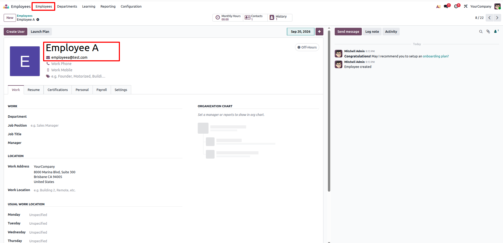
Create User Account: User A
Under Settings > Users & Companies > Users, create the login user User A using email employeea@test.com.
Assign required access roles to grant self-service sign-in privileges.
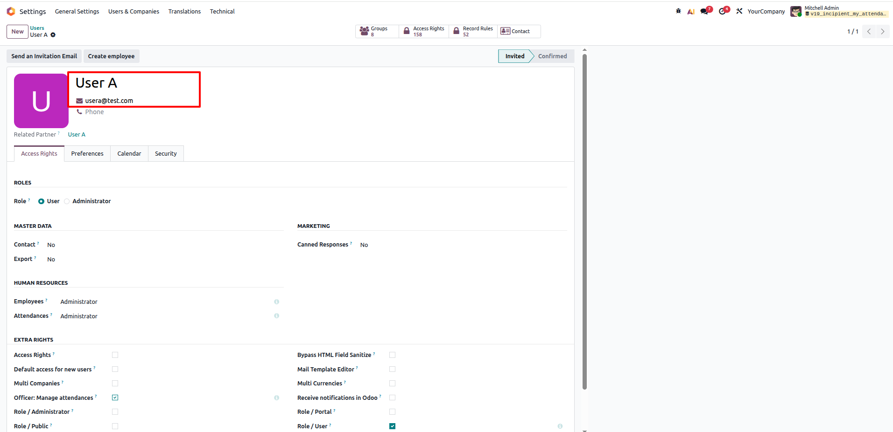
Link User A to Employee A
Open Employee A, go to the Settings tab, and select User A under the USER field.
Configure timezone as Asia/Calcutta, connecting login credentials directly to the HR record.
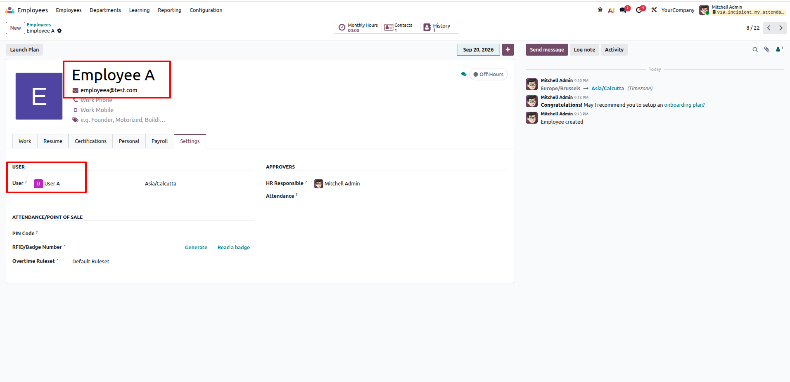
Setup Second Employee: Employee B
In Employees > Employees, register a second employee named Employee B (email: employeeb@test.com).
Demonstrates enterprise multi-user isolation across distinct staff members.
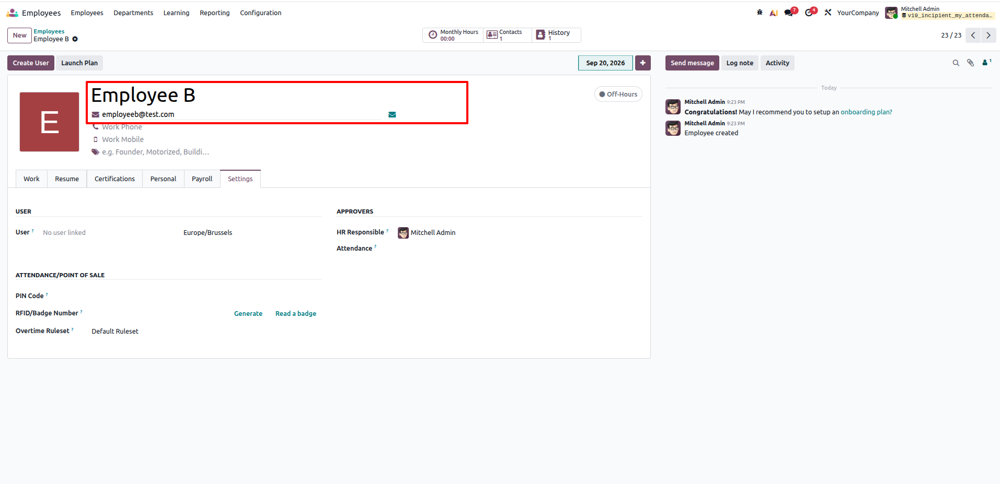
Setup Second User: User B
Under Settings > Users & Companies > Users, create the login record for User B (email: employeeb@test.com).
Each user receives independent system credentials for self-service attendance.
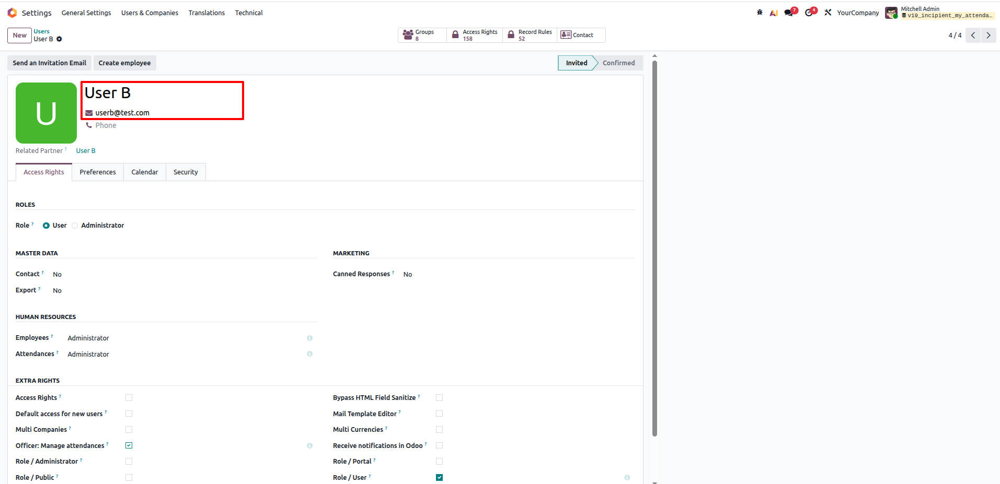
Map User B to Employee B Profile
Open Employee B, navigate to the Settings tab, and link the USER field to User B.
Ensures User B is accurately recognized by the self-service attendance engine.
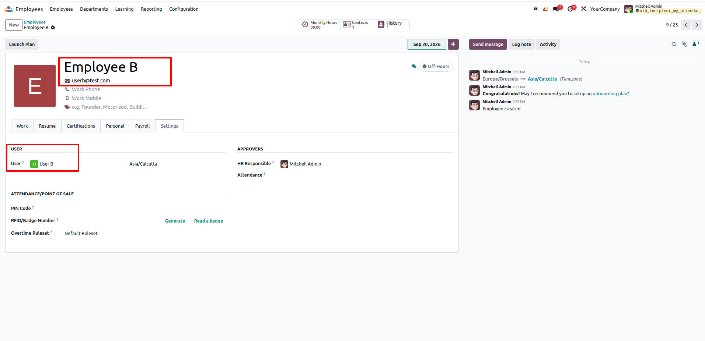
Access Self-Service Screen as User A
Log in as User A and navigate to Attendances > My Attendances (Self-Service).
Screen displays "Welcome, Employee A!", status Currently Checked Out, Hours Today: 0.00, and an active Check In button.
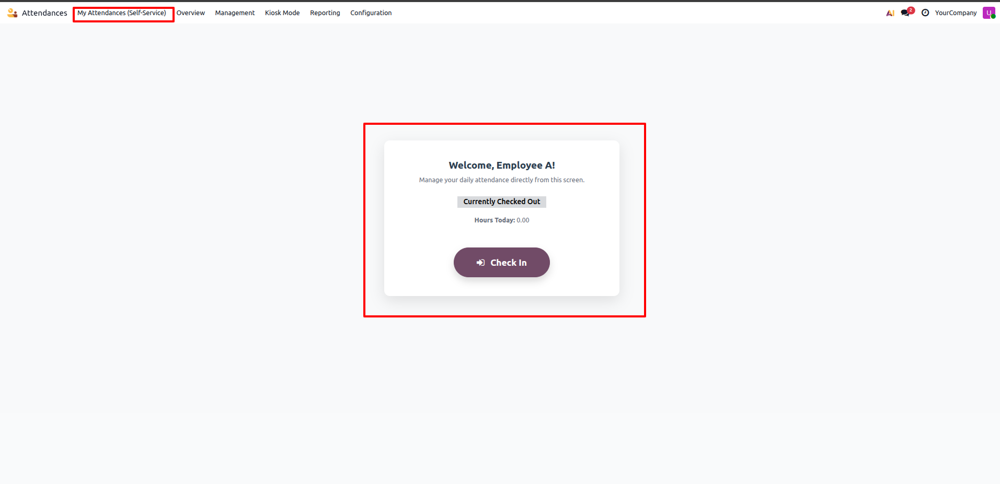
1-Click Check-In Execution
Click the prominent Check In button to start shift tracking.
Shows toast "Successfully Checked In", updates badge to Currently Checked In (green), and switches button to Check Out.
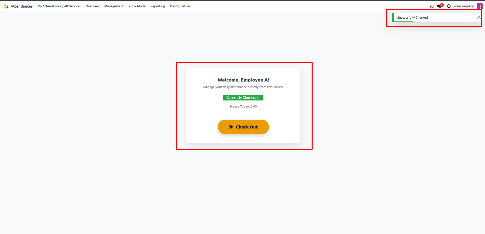
Real-Time Backend Session Sync
In Attendances > Reporting > Attendances (Pivot view), filter by Active Employees & Last 3 Months.
Employee A immediately appears with an open, active attendance session logged in real-time under September 2026.
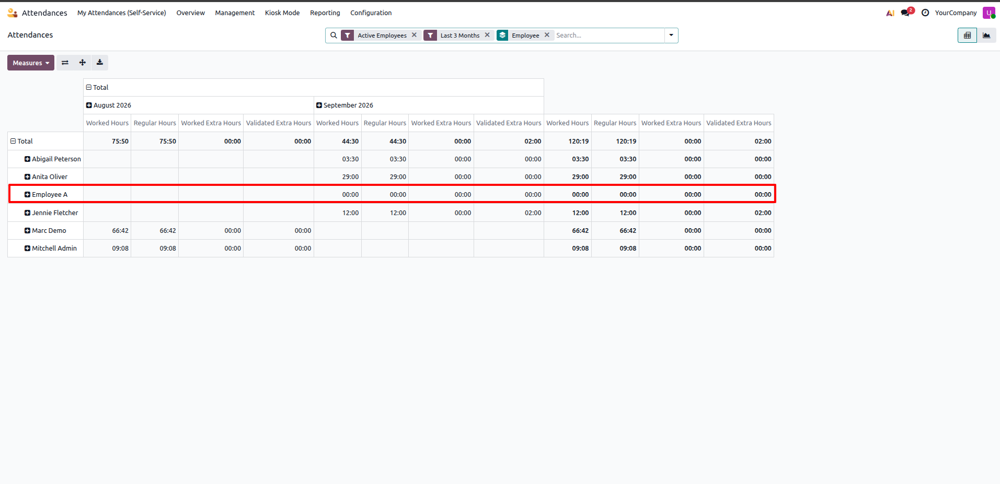
1-Click Check-Out & Dynamic Hours Calculation
At shift completion, User A clicks Check Out on the self-service dashboard.
Displays toast "Successfully Checked Out", updates badge to Currently Checked Out, and dynamically computes Hours Today: 0.18.
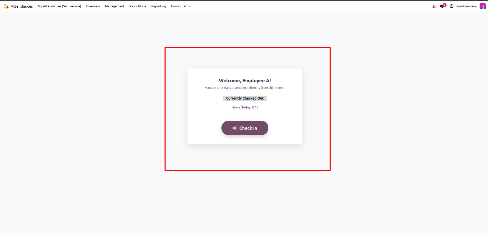
Automated Pivot Reporting Aggregation
Re-inspect the Attendances > Reporting Pivot view for September 2026.
Pivot view aggregates logged time, showing 00:11 Worked Extra Hours and 00:11 Validated Extra Hours for Employee A.
Multi-User Isolation: User B Login
Log in as User B and open Attendances > My Attendances (Self-Service).
Displays "Welcome, Employee B!" with Currently Checked Out and Hours Today: 0.00, completely isolated from Employee A's session.
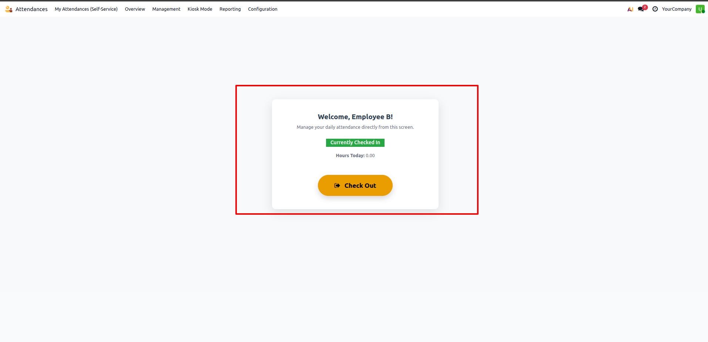
Attendance Management Audit Trail
Under Attendances > Management list view, managers review chronological timestamp logs.
Logs exact entries for Employee B (9:50 PM – 9:51 PM, 9:52 PM – 9:53 PM) and Employee A (9:29 PM – 9:40 PM, 9:41 PM – 9:47 PM) with exact worked durations.
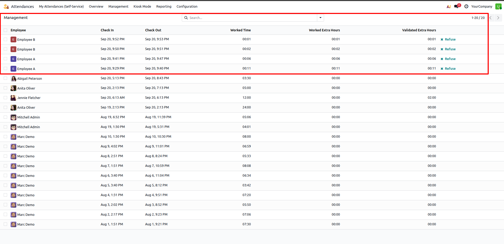
Unlinked User Scenario: User C Profile
In Settings > Users & Companies > Users, review user User C (userc@test.com).
User C has Officer: Manage attendances permissions, but NO associated HR employee record linked to the account.
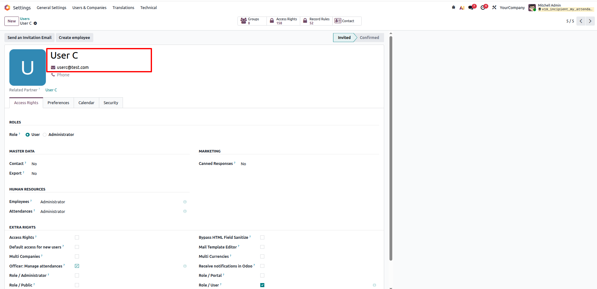
Robust Defensive Guard: Missing Employee Handling
When unlinked user User C accesses Attendances > My Attendances (Self-Service), the system intercepts the request cleanly.
Renders a defensive warning card: "Employee not found for current user.", preventing backend tracebacks or corrupt entries.
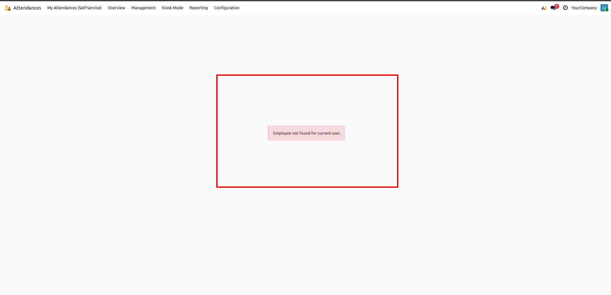
Frequently Asked Questions
Click any question below to expand or collapse details